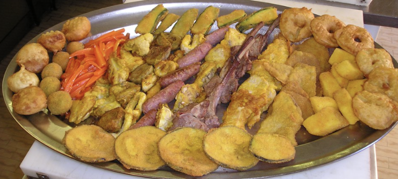
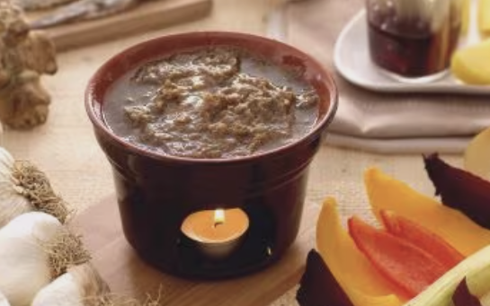

Gli agnolotti sono il tipico primo piatto della cucina piemontese e rappresentano una ricetta conosciuta ed apprezzata non solo in Italia,
ma anche all’estero per la sua bontà e semplicità...

Fritto Misto alla Piemontese
E’ un piatto della tradizione piemontese, piuttosto pesante quindi perfetto per essere servito come piatto unico...

Bagna Cauda
La bagna caoda o bagna cauda è una preparazione tipica del Piemonte preparata con acciughe,
olio e aglio ed utilizzata come intingolo per le verdure fresche della stagione autunnale...